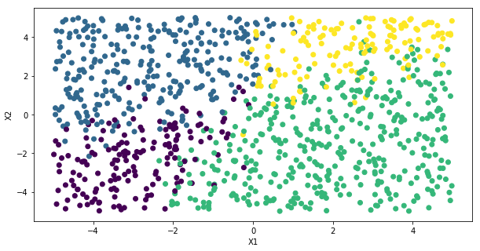
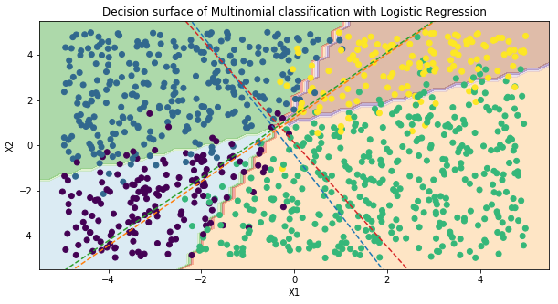
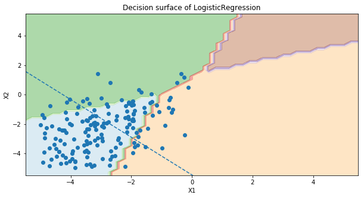
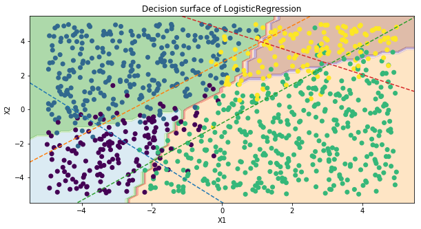

1. Introduction and assumptions
In this post-series, we are going to study the very basic modelling for classification problems, the logistic regression. Classification entails that the output is a discrete variable taking values on a pre-defined limited set, where the set dimension is the number of classes. Some examples are spam detection, object recognition and topic identification.
We have analyzed the theory in the first post, implement the algorithm with Numpy in Part 2 and using Sklearn and Tensorflow in Part 3. We solved a binary classification problem for multivariate non-linear logistic regression in Scikit-learn in Part 4. We extend the analysis to Multinomial classification, where both softmax function and one-vs-all method are applied and compared.
In this series, we do not split the dataset into training and testing sets, but we assess every model on the training set only. A dedicated post on model selection, overfitting/underfitting problem and regularization will be published soon.
Let’s get started!
2. Definition of multinomial classification
Binary classification entails that the outcome can belong to either one class or the other one, such as spam detection, where the outcome can belong to either the spam class or the ham.
To this end, we have introduced the sigmoid function that shrinks the entire real domain to the (0, 1) interval, which is suitable to describe the probabilistic domain of one of the two classes.
The probability of the other one is then the complement to 1.
What happens when the outcome can belong to more than two classes? We face the multinomial (or multi-class) classification problem. There are two ways to solve this problem:
- one-vs-all, where one logistic regression classifier for each of the K classes of the dataset. Each separate classifier will aim at identifying one specific class, for which it returns 1 while 0 otherwise. At prediction time, the class that receives the highest probability from the K classifiers is selected as the winner.
- softmax, where entire probability distribution over the K classes is return as the output of the model by means of the softmax function.
3. Data generation
We create the dataset by applying the same procedure used for the binary classification in Part 4 and combining the two distributions to get the response taking values from the set (0, 1, 2, 3).
In fact, the first temporary variable Y1cls is a dichotomous variable whose values belong to (0, 2) due to the 2 factor; the second temporary variable Y2cls ranges in (1, 2) due to the 1 bias.
In that way, if we sum the two variables we can only get (1, 2) and (3, 4) values.
The final -1 bias shifts the set to the desired one.
import numpy as np
import matplotlib.pyplot as plt
%matplotlib inline
from mpl_toolkits import mplot3d
Nx, Ny = 30, 20
Npnt = 1000
xy = 5*(2*np.random.rand(Npnt, 2)-1)
xx1, xx2 = xy[:,0], xy[:,1]
w10, w11, w12 = 2, 3, -1
w20, w21, w22 = -2, -1, 2
noise = 0.05*(np.random.randn(Npnt)-1)
hh1 = w10 + w11*xx1 + w12*xx2 + noise
hh2 = w20 + w21*xx1 + w22*xx2 + noise
Y1noise = 1/(1+np.exp(-hh1))
Y2noise = 1/(1+np.exp(-hh2))
Y1cls = np.random.binomial(1., Y1noise)*2 # dichotomous variable, n_trial=1 => Bernoulli distribution
Y2cls = np.random.binomial(1., Y2noise)+1
Ycls = Y1cls + Y2cls - 1
XX = xy.copy()
Ycls = Ycls.flatten().reshape(-1,1)
print([XX.shape, Ycls.shape])
[(1000, 2), (1000, 1)]
plt.figure(figsize=(10, 5))
plt.scatter(xx1, xx2, c=Ycls, cmap='viridis')
plt.xlabel("X1")
plt.ylabel("X2");

4. Multinomial classification
In Scikit-learn, we need to change the solver to sag when we want to define the classification task as multinomial, where the intermediate response variable is the probability distribution over the set of discrete classes.
from sklearn.linear_model import LogisticRegression
from sklearn import metrics
# multi-nomial
lgr = LogisticRegression(C=1e5, solver='sag', multi_class='multinomial') # we want to ignore regularization
YY = Ycls[:, 0]
lgr.fit(XX, YY)
Ypred = lgr.predict(XX)
Ypred_prob = lgr.predict_proba(XX)
Ypred.shape, Ypred_prob.shape
((1000,), (1000, 4))
We also need to specify how the precision and recall can be calculated due to multiple classes.
In other words, the false-positive definition does not fit to the non-binary case per se.
Here we set the average attribute to weighted, so that it calculates the metrics for each label and finds their average weighted by support (the number of true instances for each label). See Scikit-learn doc.
print("Accuracy: {}".format(metrics.accuracy_score(Ycls, Ypred)))
print("Precision: {}".format(metrics.precision_score(Ycls, Ypred, average='weighted')))
print("Recall: {}".format(metrics.recall_score(Ycls, Ypred, average='weighted')))
Accuracy: 0.905
Precision: 0.9047666713801842
Recall: 0.905
The size of the response domain (number of classes) is derived from the parameter size itself. The coefficient 2D array has two columns as the number of predictors.
print("Intercept size: {}".format(lgr.intercept_.shape))
print("Weight array size: {}".format(lgr.coef_.shape))
Intercept size: (4,)
Weight array size: (4, 2)
We define the two dimensional grid for the two predictors and determine the model predicted class by using the predict method.
The y grid is then reshaped to match the x1 grid size.
Npnt = 50 # number of points of the mesh
mrg = .5
x1min, x1max = xx1.min() - mrg, xx1.max() + mrg
x2min, x2max = xx2.min() - mrg, xx2.max() + mrg
x1grd, x2grd = np.meshgrid(np.linspace(x1min, x1max, Npnt), np.linspace(x2min, x2max, Npnt))
ygrd = lgr.predict(np.vstack((x1grd.ravel(), x2grd.ravel())).T)
ygrd = ygrd.reshape(x1grd.shape)
x1line = np.linspace(x1min, x1max, Npnt).reshape(-1, 1)
x2line = -(x1line*lgr.coef_[:,0] + lgr.intercept_)/lgr.coef_[:,1]
We want also to get the decision boundaries, one for each class.
The line equation is set with the x1 predictor as the input and the x2 predictor as the output.
Due to multiple parameter array, we obtain a 2-dimensional x2line array with 4 columns, one for each class.
Here the summary of the four decision boundaries:
1. The blue dashed line delimits the Y=0 class (purple dots within the light blue area).
2. The orange dashed line delimits the Y=1 class (blue dots within the light green area).
3. The green dashed line delimits the Y=2 class (green dots within the light yellow area).
4. The red dashed line delimits the Y=3 class (yellow dots within the light brown area).
The 0/3 class decision boundaries almost coincide with each other, as much as the 1/2 class boundaries do.
This proves that the four classes have been generated by the combination of two simple Bernoulli distributions, each with a specific decision boundary.
plt.figure(figsize=(10, 5))
# contour
plt.contourf(x1grd, x2grd, ygrd, cmap=plt.cm.Paired, alpha=0.4)
plt.title("Decision surface of Multinomial classification with Logistic Regression")
plt.axis('tight')
# dataset
plt.scatter(xx1, xx2, c=Ycls, cmap='viridis')
plt.xlabel("X1")
plt.ylabel("X2")
# decision boundary
plt.plot(x1line, x2line[:,:], ls="--");

5. One-vs-all classification
The one-vs-all classification paradigm states the multi-class problem as multiple binary classification problems.
In other words, if we need to build an N-class classifier (with $N>2$), we treat the process as follows:
1. we build N separate binary classifiers
2. we train the j-th classifier to classify class j as positive class and everything else as negative class.
3. at inference stage, we feed the input to every classifier and define as the final response the class j whose corresponding classifier has returned the highest probability.
In practice, it is accomplished by setting the multi_class attribute to ovr, which stands for One-Versus-Rest.
# one versus rest
lgr = LogisticRegression(C=1e5, solver='sag', multi_class='ovr') # we want to ignore regularization
YY = Ycls[:, 0]
lgr.fit(XX, YY)
Ypred = lgr.predict(XX)
Ypred_prob = lgr.predict_proba(XX)
Ypred.shape, Ypred_prob.shape
((1000,), (1000, 4))
We apply the same code to get the model metrics.
print("Accuracy: {}".format(metrics.accuracy_score(YY, Ypred)))
print("Precision: {}".format(metrics.precision_score(YY, Ypred, average='weighted')))
print("Recall: {}".format(metrics.recall_score(YY, Ypred, average='weighted')))
Accuracy: 0.893
Precision: 0.8941398474348617
Recall: 0.893
We also want to get the decision boundaries, one for each class.
Here the summary of the four decision boundaries:
1. The blue dashed line delimits the Y=0 class (purple dots within the light blue area).
2. The orange dashed line delimits the Y=1 class (blue dots within the light green area).
3. The green dashed line delimits the Y=2 class (green dots within the light yellow area).
4. The red dashed line delimits the Y=3 class (yellow dots within the light brown area).
The 0/3 class and the 1/2 class decision boundaries do no longer match each other.
Indeed, the decision boundary of class j is still “parallel” to the opposite class’s boundary, but it is shifted towards the class centroid to separate its class to the rest as much as possible.
ygrd = lgr.predict(np.vstack((x1grd.ravel(), x2grd.ravel())).T)
ygrd = ygrd.reshape(x1grd.shape)
x1line = np.linspace(x1min, x1max, Npnt).reshape(-1, 1)
x2line = -(x1line*lgr.coef_[:,0] + lgr.intercept_)/lgr.coef_[:,1]
plt.figure(figsize=(10, 5))
# contour
plt.contourf(x1grd, x2grd, ygrd, cmap=plt.cm.Paired, alpha=0.4)
plt.title("Decision surface of LogisticRegression")
plt.axis('tight')
# dataset
#plt.scatter(xx1, xx2, c=Ycls, cmap='viridis')
plt.scatter(xx1[YY==0], xx2[YY==0], cmap='viridis')
plt.xlabel("X1")
plt.ylabel("X2")
# decision boundary
plt.plot(x1line, x2line[:,0], ls="--");

plt.figure(figsize=(10, 5))
# contour
plt.contourf(x1grd, x2grd, ygrd, cmap=plt.cm.Paired, alpha=0.4)
plt.title("Decision surface of LogisticRegression")
plt.axis('tight')
# dataset
plt.scatter(xx1, xx2, c=Ycls, cmap='viridis')
plt.xlabel("X1")
plt.ylabel("X2")
# decision boundary
plt.plot(x1line, x2line, ls="--");
